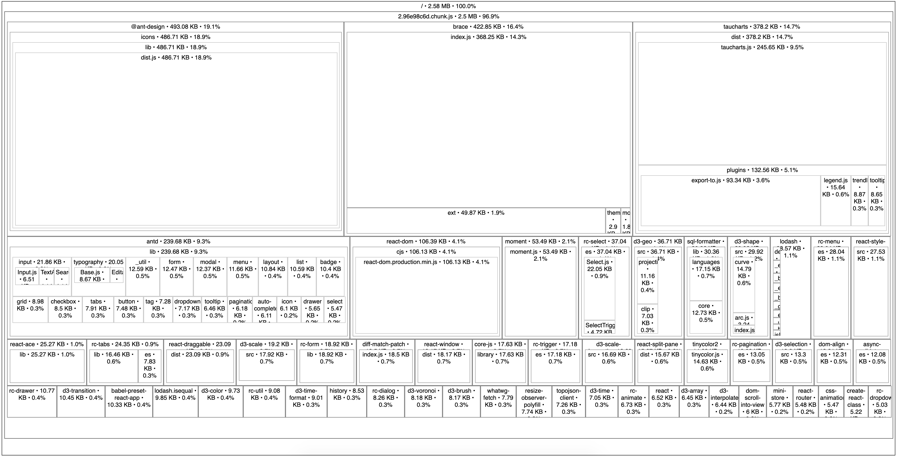

This post is part of a series detailing the work involved to slim down SQLPad's JavaScript bundle size. Read the introductory post.
React-virtualized by Brian Vaughn is a collection of lower level components to help efficiently render large lists and tables (thousands of rows) without crushing React or the browser. This is primarily for applications where you do not want to paginate your data, and instead show all of it. Perfect for an app that renders a large table of SQL query results!
It was initially brought into SQLPad to assist in building a custom data grid component to replace fixed-data-table-2 which itself was a continuation of the abandoned fixed-data-table component. At the time there were some performance issues and other quirks, so I decided to build my own data grid with react-virtualized.
Fortunately for me Brian is already on top of things, and has created react-window, an amazing spiritual successor of sorts to react-virtualized. It is a complete rewrite of react-virtualized with a focus on making it smaller and faster, as well as improving the API.
Swapping out react-virtualized for react-window shaved ~100 KB off the build (minified, uncompressed).
The data grid still feels fast, and I can vouch for the better API. The limitation of features has simplified the implementation and its really nice to work with.
Thanks Brian!
bundle ~2.68 MB
- react-virtualized ~0.12 MB
+ react-window ~0.02 MB
-------------------------------
new bundle ~2.58 MB
